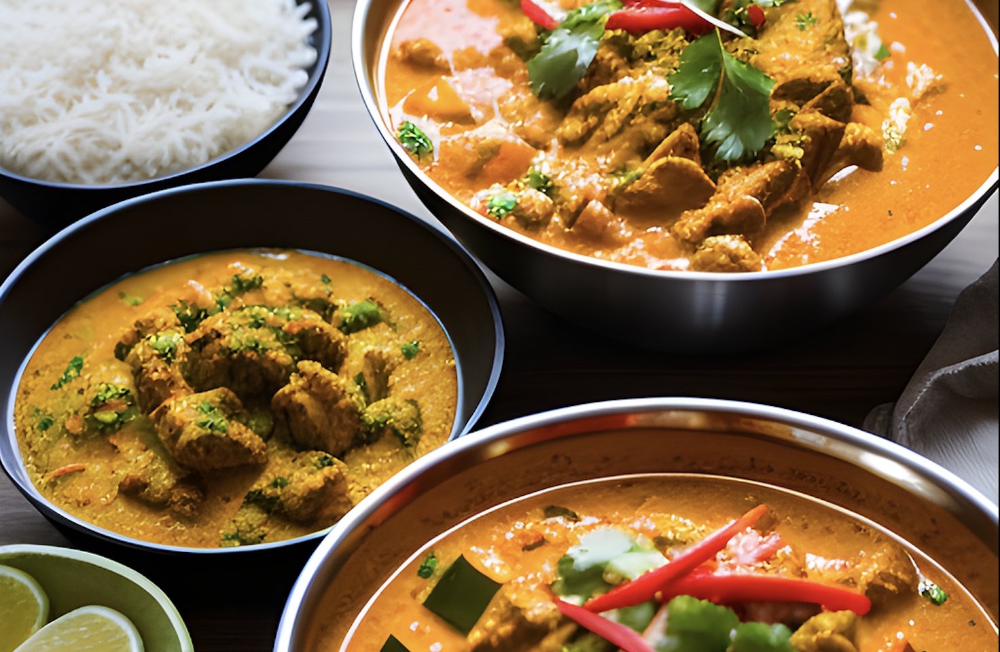

多様なスパイスやハーブを駆使した風味豊かな料理

地域によって気候や食材、調理法が異なる。北インドではバターやクリーム、ナッツを使った濃厚なカレー、南インドではココナッツミルクを使ったスパイシーなカレーが好まれる傾向がある。
ヨーグルトやさまざまなスパイスに鶏肉を漬け込んで作る料理。カレーの風味とヨーグルトのまろやかさが印象的な味わいで、幅広い世代に受け入れられやすい。

米とともに羊肉や鶏肉、魚、野菜、そしてさまざまなスパイスを加えて炊き込む、または蒸し焼きにして作られる。独特のスパイスの風味と、パラパラとした食感が特徴。

生地を薄く伸ばして焼いた平焼きパンの一種。外はパリパリ、中はもちもちとした食感と、ほんのりとした甘みが特徴

小麦粉で作った皮で、じゃがいもをベースにスパイスを利かせた具材を包み、さもさ油で揚げて作られる。日本でいう揚げ餃子に近い料理。

ヨーグルトの酸味と、牛乳のまろやかさが合わさった爽やかな飲み物。砂糖やフルーツ、スパイスなどで味を調える。